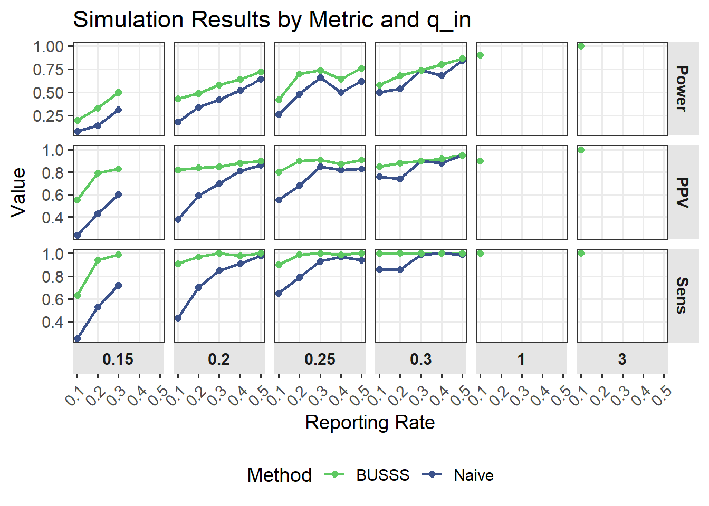

timeline
title Spatial Scan Statistic Development
1965 : Conceptual basis - Naus
1997 : Basic Spatial Scan Statistic (Frequentist)
1998 : Space-Time Extension (Frequentist)
2005 : Flexible Shapes (Frequentist)
2005 : Bayesian Spatial Scan Statistic
2007 : Multivariate Spatial Scan Statistic (Frequentist)
2012 : Overdispersed data extension (Frequentist)
2017 : Bayesian Spatial Scan Statistic for Zero-inflated count data
2018 : Wald-based Spatial Scan Statistics (Frequentist)
2024 : Bayesian Spatial Scan Statistic for Multinormal data
A Bayesian Spatial Scan Statistic for Under-reported Data
Introduction
Public Health Surveillance


- Public health surveillance
- The systematic, ongoing assessment of the health of a community including the timely collection, analysis, interpretation, dissemination and subsequent use of data. 1
Outbreak Detection
A subset of disease surveillance methods focus on disease progression and outbreak detection.
Novel disease monitoring
New diseases often lack reliable testing and reporting systems. Early cases may be missed or misclassified, obscuring disease surveillance techniques that assume complete cases.
Examples
- COVID-19
- HIV/AIDS
- Tuberculosis (TB)
Accounting for Under-reporting
Most methods proposed for modeling under-reported or misclassified data fall into two categories:
- Double sampling
- latent variable models
Spatial Scan Statistics
General Concept
Scan statistics
- Select candidate regions
- Calculate relative risk inside and outside of candidate region
- Determine region with largest difference

Frequentist Spatial Scan Statistic
- The framework assumes that we observe counts \(z_i\) such that \(z_i \sim \text{Poisson}(qb_i)\)
- Where \(b_i\) represents the known baseline/at risk population of cell \(S_i\)
- \(q\) is the unknown underlying disease rate
\[ H_0: \text{No cluster (common rate for all regions)} \\ H_1(S): \text{Cluster in subset }S\text{ with elevated rate vs. outside } S \]
- Compute likelihood ratio test statistic for each candidate zone \(S\)
- The scan statistic test statistic is \(\Lambda = \max_{S \in C}\lambda(S)\).
- Generate Monte Carlo samples under \(H_0\) to calculate P-value
Bayesian Spatial Scan Statistics
- Assuming we observe count data \(z_i\) in area \(i\), each associated with baeline \(b_i\)
- Under the null hypothesis there is no cluster and all locations share \(q_{all}\) \[ z_i \sim \text{Poisson}(q_{all} b_i), \quad q_{all} \sim \text{Beta}(\alpha_{all}, \beta_{all})\]
- The alternative hypothesis for each candidate cluster \(i \in \mathcal{S}\), where \(\mathcal{S}\) is the space of all possible clusters \[ \begin{cases} z_i \sim \text{Poisson}(q_{in} b_i), &i \in S, \quad q_{in} \sim \text{Gamma}(\alpha_{in}, \beta_{in}), \\ z_i \sim \text{Poisson}(q_{out} b_i), &i \notin S, \quad q_{out} \sim \text{Gamma}(\alpha_{out}, \beta_{out}). \end{cases} \]
- Marginal likelihoods based on the gamma-Poisson model
- Conjugate model possible to solve for closed form solution
Bayesian Spatial Scan Statitic Testing
- Using the maringal likelihoods from the models the posterior probability under the null is \[P(H_0 | D) = \frac{P(D|H_0) P(H_0)}{P(D)}\]
- The posterior probability under the alternative is \[P(H_1(i) | D) = \frac{P(D|H_1{i}) P(H_1(i))}{P(D)}\]
- Then we can return regions with non-negligible posterior probabilities
- Since we have the full posterior probability distributions there is no need for randomization testing
- Bayes factors can be used to provide a direct measure of evidence ofr one hypothesis over the other
Bayesian Interpretation
| BF | Log(BF) | Strength of evidence \(H_0\) |
|---|---|---|
| 1 to 3.2 | 0 to 1.16 | Not Significant |
| 3.2 to 10 | 1.16 to 2.30 | Positive |
| 10 to 100 | 2.30 to 4.61 | Strong |
| \(>\) 100 | \(> 4.61\) | Decisive |
Scan Statistic Timeline
- Since the formalization in 1997 spatial scan statistics have been used and described as a method for epidemiologists
- No extension to account for under-reported count data
Proposed Method
Model
- We propose a novel Bayesian spatial scan statistic model by modeling the true counts as a latent variable and introducing reporting probability \(p\).
- Our spatial scan statistic is based on the hierarchical model \[ z_i \sim \text{Poisson}(p \times q \times b_i) \\ q \sim \text{gamma}(\alpha, \beta) \\ p \sim \text{beta}(\alpha_p, \beta_p) \]
- Model no longer conjugate
Bayesian Spatial Scan Statistic Extension
- The new null hypothesys assumes no clusters \[ z_i \sim \text{Poisson}(p \times q_{all} \times b_i), \quad q_{all} \sim \text{gamma}(\alpha_{all}, \beta_{all}), \quad p \sim \text{beta}(\alpha, \beta) \]
- The resulting alternative hypothesys for region \(i\) is \[ \begin{cases} z_i \sim \text{Poisson}(p \times q_{in} \times b_i), &i \in S, \quad q_{in} \sim \text{Gamma}(\alpha_{in}, \beta_{in}), \\ z_i \sim \text{Poisson}(p \times q_{out} \times b_i), &i \notin S, \quad q_{out} \sim \text{Gamma}(\alpha_{out}, \beta_{out}). \end{cases} \\ p \sim \text{beta}(\alpha, \beta) \]
Setting Priors
- Necessary to set an informative prior on reporting rate \(p\)
- Historical Data
- Expert elicitation
- Can set a difuse prior on the \(q\) parameters
Posterior Estimation
- The marginal likelihood under a candidate region \(i\) is now: \[ P(D|H_1(S)) = \int \int \int P(D|q_{in}, q_{out}, p) \times \pi(q_{in}) \times \pi(q_{out}) \times \pi(p) dq_{in} dq_{out} dp \]
- Posterior samples are obtained through MCMC sampling in stan
Decision Making
- Decision should be based on estimate of risk ratio within candidate cluster and outside. \[ \widehat{RR} = \frac{\widehat{q_{in}}}{\widehat{q_{out}}} \]
- Bayes factors provide evidence for alternative hypothesis
- calculated using bridge sampling3 in R
- Most likely cluster selected based on largest risk ratio and Bayes factor
Simulation Study
Simulation Design
- 39 counties of Washington state with an outbreak of 3 counties in south eastern Washington
- Baseline values where determined by 100,000 total cases to start
- 50 simulated data sets for each set of parameters
- Reporting rate: 0.1, 0.2, 0.3, 0.4, and 0.5
- Outbreak effect (\(\Delta = q_{in} - q_{out}\)): 0.15, 0.20, 0.25, 0.30, 1.0, and 3.04

Simulation priors
- Priors for reporting rate \(p\) where set using the betabuster tool in
epiRpackage \[ p \sim \text{Beta}(3.5, 23) \quad \text{if} \quad p = 0.1 \\ p \sim \text{Beta}(4.5, 15) \quad \text{if} \quad p = 0.2 \\ p \sim \text{Beta}(10, 22) \quad \text{if} \quad p = 0.3 \\ p \sim \text{Beta}(13, 19) \quad \text{if} \quad p = 0.4 \\ p \sim \text{Beta}(1, 1) \quad \text{if} \quad p = 0.5 \] - Priors for \(q\)
Simulation Metrics
Even when the null hypothesis is correctly rejected, the detected clusters rarely match the true cluster exactly.
To evaluate how well they overlap we will use:
- Power: Proportion of detected clusters exactly match true cluster
- Sensitivity: Proportion of true cases correctly included
- Positive Predicted Value (PPV): Proportion of detected cases that are actually in the true cluster
Simulation Results Visual
library(ggplot2)
library(dplyr)
library(tidyr)
# Recreate data frame
df <- tribble(
~Reporting, ~delta, ~Naive_Power, ~Naive_Sens, ~Naive_PPV,
~BUSSS_Power, ~BUSSS_Sens, ~BUSSS_PPV,
0.1, 0.15, 0.08, 0.25, 0.24, 0.20, 0.63, 0.55,
0.2, 0.15, 0.14, 0.53, 0.43, 0.33, 0.94, 0.79,
0.3, 0.15, 0.31, 0.72, 0.60, 0.50, 0.99, 0.83,
0.1, 0.20, 0.18, 0.43, 0.38, 0.43, 0.91, 0.82,
0.2, 0.20, 0.34, 0.70, 0.59, 0.49, 0.97, 0.84,
0.3, 0.20, 0.42, 0.85, 0.70, 0.58, 1.00, 0.85,
0.4, 0.20, 0.52, 0.91, 0.81, 0.64, 0.98, 0.88,
0.5, 0.20, 0.64, 0.98, 0.86, 0.72, 1.00, 0.90,
0.1, 0.25, 0.26, 0.65, 0.55, 0.42, 0.90, 0.80,
0.2, 0.25, 0.48, 0.79, 0.68, 0.70, 0.99, 0.90,
0.3, 0.25, 0.66, 0.93, 0.85, 0.74, 1.00, 0.91,
0.4, 0.25, 0.50, 0.97, 0.82, 0.64, 0.99, 0.87,
0.5, 0.25, 0.62, 0.94, 0.83, 0.76, 1.00, 0.91,
0.6, 0.25, 0.76, 0.93, 0.91, 0.80, 1.00, 0.92,
1.0, 0.25, 0.86, 1.00, 0.94, 0.86, 1.00, 0.94,
0.1, 0.30, 0.50, 0.86, 0.76, 0.58, 1.00, 0.85,
0.2, 0.30, 0.54, 0.86, 0.74, 0.68, 1.00, 0.88,
0.3, 0.30, 0.74, 0.99, 0.90, 0.74, 1.00, 0.90,
0.4, 0.30, 0.68, 1.00, 0.88, 0.80, 1.00, 0.92,
0.5, 0.30, 0.84, 0.99, 0.95, 0.86, 1.00, 0.95,
0.1, 1.00, 0.90, 1.00, 0.90, 0.90, 1.00, 0.90,
0.1, 3.00, 1.00, 1.00, 1.00, 1.00, 1.00, 1.00
)
# Reshape data to long format
df_long <- df %>%
pivot_longer(
cols = -c(Reporting, delta),
names_to = c("Method", "Metric"),
names_pattern = "(Naive|BUSSS)_(.*)",
values_to = "Value"
)
# Plot: nested facets (Metric rows, q_in columns)
df_long |>
filter(Reporting < .6) |>
ggplot(aes(x = Reporting, y = Value, color = Method, group = Method)) +
geom_line(linewidth = 1) +
geom_point(size = 2) +
facet_grid(Metric ~ delta, scales = "free_y", switch = "x") +
scale_color_manual(values = c("Naive" = "#3b528b", "BUSSS" = "#5ec962")) +
scale_x_continuous(breaks = unique(df_long$Reporting)) +
labs(
x = "Reporting Rate",
y = "Value",
color = "Method",
title = "Simulation Results by Metric and q_in"
) +
theme_bw(base_size = 14) +
theme(
panel.grid.minor = element_blank(),
strip.background = element_rect(fill = "grey90", color = NA),
strip.text = element_text(face = "bold"),
axis.text.x = element_text(angle = 45, hjust = 1),
legend.position = 'bottom'
)`geom_line()`: Each group consists of only one observation.
ℹ Do you need to adjust the group aesthetic?
`geom_line()`: Each group consists of only one observation.
ℹ Do you need to adjust the group aesthetic?
`geom_line()`: Each group consists of only one observation.
ℹ Do you need to adjust the group aesthetic?
`geom_line()`: Each group consists of only one observation.
ℹ Do you need to adjust the group aesthetic?
`geom_line()`: Each group consists of only one observation.
ℹ Do you need to adjust the group aesthetic?
`geom_line()`: Each group consists of only one observation.
ℹ Do you need to adjust the group aesthetic?
library(gt)
df %>%
gt() %>%
tab_spanner(
label = "Naive BSSS",
columns = c(Naive_Power, Naive_Sens, Naive_PPV)
) %>%
tab_spanner(
label = "BUSSS",
columns = c(BUSSS_Power, BUSSS_Sens, BUSSS_PPV)
) %>%
cols_label(
Reporting = "Reporting",
q_in = html("q<sub>in</sub>"),
Naive_Power = "Power",
Naive_Sens = "Sensitivity",
Naive_PPV = "PPV",
BUSSS_Power = "Power",
BUSSS_Sens = "Sensitivity",
BUSSS_PPV = "PPV"
) %>%
tab_row_group(
group = "q_in = 2.15", rows = q_in == 2.15
) %>%
tab_row_group(
group = "q_in = 2.20", rows = q_in == 2.20
) %>%
tab_row_group(
group = "q_in = 2.25", rows = q_in == 2.25
) %>%
tab_row_group(
group = "q_in = 2.30", rows = q_in == 2.30
) %>%
tab_row_group(
group = "q_in = 3.00", rows = q_in == 3.00
) %>%
tab_row_group(
group = "q_in = 5.00", rows = q_in == 5.00
) Data Application
Texas COVID-19 Data
- COVID-19 data in early 2020 were severely under-reported due to limited testing and difficulty to diagnose (Hortaçsu, Liu, and Schwieg 2021)
- Data (254 Counties)
- COVID-19 cases (Probable and Confirmed)
- Population


Real Data (priors)
- Estimates from early COVID-19 studies suggest very low reporting rates (\(\approx 10\%\)), with low probability of exceeding 30\(\%\) (Chen, Song, Stamey 2022).
- This information results in a prior of \(p \sim \text{Beta}(7, 55)\)5
- Difusse priors where fit to \(q_\cdot\) parameters
\[ q_{all} \sim \text{gamma}() \\ q_{out} \sim \text{gamma}() \\ q_{in} \sim \text{gamma}() \]
Real Data Results
Both methods provide different most likely clusters;
- Naive: Around the city of Houston
- Under-reported: Around El Paso and north of DFW.
Bayes factors for each identified cluster is very large indicating significant evidence in favor of \(H_1\) over \(H_0\).


Discussion
- Traditional scan statistics may fail when case counts are under-reported, common in emerging outbreaks
- The proposed method models reporting probability, improving cluster detection under incomplete data
- Comparison with confirmed cases suggest some true clusters (Texas Panhandle) remain undetected, indicating further refinement is needed
Future work
- Extend to spatiotemporal model for real-time detection
- Incorporate multivariate outcomes
- Allow spatially varying rates to reflect local testing access